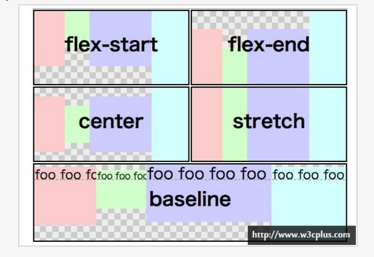

Flexbox通常能让我们更好的操作他的子元素布局，例如：
1、如果元素容器没有足够的空间，我们无需计算每个元素的宽度，就可以设置他们在同一行；
2、可以快速让他们布局在一列；
3、可以方便让他们对齐容器的左、右、中间等；
4、无需修改结构就可以改变他们的显示顺序；
5、如果元素容器设置百分比和视窗大小改变，不用提心未指定元素的确切宽度而破坏布局，因为容器中的每个子元素都可以自动分配容器的宽度或高度的比例。
flexbox的术语在详细阅读这篇文章之前，我们很有必要先了解flexbox的几个常用术语，这样有助于大家对后文的理解。
伸缩容器：一个设有“display:flex”或“display:inline-flex”的元素
伸缩项目：伸缩容器的子元素
主轴、主轴方向：用户代理沿着一个伸缩容器的主轴配置伸缩项目，主轴是主轴方向的延伸。
主轴起点、主轴终点：伸缩项目的配置从容器的主轴起点边开始，往主轴终点边结束。
主轴长度、主轴长度属性：伸缩项目的在主轴方向的宽度或高度就是项目的主轴长度，伸缩项目的主轴长度属性是width或height属性，由哪一个对着主轴方向决定。
侧轴、侧轴方向：与主轴垂直的轴称作侧轴，是侧轴方向的延伸。
侧轴起点、侧轴终点：填满项目的伸缩行的配置从容器的侧轴起点边开始，往侧轴终点边结束。
侧轴长度、侧轴长度属性：伸缩项目的在侧轴方向的宽度或高度就是项目的侧轴长度，伸缩项目的侧轴长度属性是「width」或「height」属性，由哪一个对着侧轴方向决定。
下图是一个row伸缩容器中各种方向与大小术语的示意图：
开始使用Flexbox我们如何开始使用Flexbox呢？大多数的Flexbox属性都应用于父容器的元素上。因为Flexbox，你可以指定你想要制定的一个容器，使用一个特殊的值显示属性 接下来你可以使用“flex-row”属性来指定子元素布局是在一行还是一列显示。如果你愿意，你可以定义关键词“wrap”，来指定内容容器在新的一行（当父元素容器太小，flexbox元素想在同一行显示）。
属性 有关于flex-flowflex-flow是用来伸缩行换行，flex-flow属性是同时设定“flex-direction(伸缩流的方向)”和“flex-wrap（伸缩行换行）”属性的缩写，两个属性决定了伸缩容器的主轴与侧轴。此属性主要适用于伸缩容器。在这篇文章的例子中，主要是“footer”元素。
有关于flex-directionflex-direction属性可以用来设定伸缩容器的主轴的方向，这也决定了用户代理配置伸缩项目的方向。主要适用于伸缩容器，主要包括以下几个值：
row:flex-direction的默认值，表示伸缩容器的主轴与当前书写模式的行内轴（文字布局的主要主向）。主轴起点与主轴终点方向分别等同于当前书写模式的始与结方向。
row-reverse：表示的是除了主轴起点与主轴终点方向交换以外同row属性值的作用。
column：表示的是伸缩容器的主轴与当前书写模式的块轴（块布局的主要方向）同向。主轴起点与主轴终点方向分别等同于当前书写模式的前与后方向。简单的可以理解为列布局。
column-reverse：表示的是除了主轴起点与主轴终点方向交换以外同“column”的属性值作用。
有关于flex-wrapflex-wrap属性主要用来控制伸缩容器是单行还是多行，也决定了侧轴方向一新的一行的堆放方向。主要适用于伸缩容器，主要包括以下几个值：
nowrap:flex-wrap的默认值，表示的是伸缩容器为单行。侧轴起点方向等同于当前书写模式的起点或前/头在侧轴的那一边，而侧轴终点方向是侧轴起点的相反方向。
wrap：表示的是伸缩容器为多行。侧轴起点方向等同于当前书写模式的起眯或前/头在侧轴的那一边，而侧轴终点方向是侧轴起点的相反方向。
wrap-reverse：除了侧轴起点与侧轴终点方向交换以外同wrap所起作用相同。
设置flexbox子元素（伸缩项目）的对齐 侧轴对齐伸缩项目——align-items第一个我们一起看看“align-items”属性，它充许您调整伸缩项目在侧轴的对齐方式，主要包括以下几个值：
flex-start/baseline：伸缩项目在侧轴起点边的外边距紧靠住该行在侧轴起点的边。
flex-end：伸缩项目在侧轴终点边的外边距靠住该行在侧轴终点的边。
center：伸缩项目的外边距盒在该行的侧轴上居中放置。（如果伸缩行的尺寸小于伸缩项目，则伸缩项目会向两个方向溢出相同的量）。
stretch：伸缩项目拉伸，填满整个侧轴
 主轴对齐伸缩项目——justify-contentflex-start：伸缩项目向一行的起始位置靠齐。该行的第一个伸缩项目在主轴起点边的外边距与该行在主轴起点的边对齐，同时所有后续的伸缩项目与其前一个项目对齐。
flex-end：伸缩项目向一行的结束位置靠齐。该行的最后一个伸缩项目在主轴终点边的外边距与该行在主轴终点的边对齐，同时所有前面的伸缩项目与其后一个项目对齐。
center：伸缩项目向一行的中间位置靠齐。该行的伸缩项目将相互对齐并在行中居中对齐，同时第一个项目与该行的在主轴起点的边的距离等同与最后一个项目与该行在主轴终点的边的距离（如果剩余空间是负数，则保持两端溢出的长度相等）。
space-between：伸缩项目会平均地分布在一行里。如果剩余空间是负数，或该行只有一个伸缩项目，则此值等效于「flex-start」。在其它情况下，第一个项目在主轴起点边的外边距会与该行在主轴起点的边对齐，同时最后一个项目在主轴终点边的外边距与该行在主轴终点的边对齐，而剩下的伸缩项目在确保两两之间的空白空间相等下平均分布。
伸缩项目堆栈伸缩行——align-contentflex-start：各行向伸缩容器的起点位置堆叠。伸缩容器中第一行在侧轴起点的边会紧靠住伸缩容器在侧轴起点的边，之后的每一行都紧靠住前面一行。
flex-end：各行向伸缩容器的结束位置堆叠。伸缩容器中最后一行在侧轴终点的边会紧靠住该伸缩容器在侧轴终点的边，之前的每一行都紧靠住后面一行。
center：各行向伸缩容器的中间位置堆叠。各行两两紧靠住同时在伸缩容器中居中对齐，保持伸缩容器在侧轴起点边的内容边和第一行之间的距离与该容器在侧轴终点边的内容边与第最后一行之间的距离相等。（如果剩下的空间是负数，则行的堆叠会向两个方向溢出的相等距离。）
space-between：各行在伸缩容器中平均分布。如果剩余的空间是负数或伸缩容器中只有一行，该值等效于「flex-start」。在其它情况下，第一行在侧轴起点的边会紧靠住伸缩容器在侧轴起点边的内容边，最后一行在侧轴终点的边会紧靠住伸缩容器在侧轴终点的内容边，剩余的行在保持两两之间的空间相等的状况下排列。
space-around：各行在伸缩容器中平均分布，在两边各有一半的空间。如果剩余的空间是负数或伸缩容器中只有一行，该值等效于「center」。在其它情况下，各行会在保持两两之间的空间相等，同时第一行前面及最后一行后面的空间是其他空间的一半的状况下排列。
stretch：各行将会伸展以占用剩余的空间。如果剩余的空间是负数，该值等效于「flex-start」。在其它情况下，剩余空间被所有行平分，扩大各行的侧轴尺寸。
关于flexflex用来决定伸缩项目的伸缩性。一个伸缩容器会等比地按照各伸缩项目的扩展比率分配剩余空间，也会按照收缩比率缩小各项目以避免溢出。
flex属性可以用来指定伸缩长度的部件：扩展比率flex-grow，收缩比率flex-shrink以及伸缩基准值flex-basis。当一个元素是伸缩项目时，flex属性将代替主轴长度属性决定元素的主轴长度。若元素不是伸缩项目，则flex属性没有效果。
flex-grow：此属性值为正数值，用来设置扩展比率，也就是剩余空间是正值的时候此伸缩项目相对于伸缩容器里其他伸缩项目能分配到空间比例。若省略则会被设置为“1”。
flex-shrink：此属性值为正数值，用来设置收缩比率，也就是剩余空间是负值的时候此伸缩项目相对于伸缩容器里其他伸缩项目能收缩的空间比例。若省略则会被设置为“1”，在收缩的时候收缩比率会以伸缩基准值加权。
flex-basis：与width属性使用相同的值，可以用来设置flex-basis长写并指定伸缩基准值，也就是根据可伸缩比率计算 出剩余空间的分布之前，伸缩项目主轴长度的起始数值。若在flex缩写省略了此属性设置，则flex-basis的指定值是“0”，若flex-basis的指定值是“auto”，则伸缩基准值的指定值是元素主轴长度属性的值。
参考 http://www.w3cplus.com/css3/flexbox-basics.html